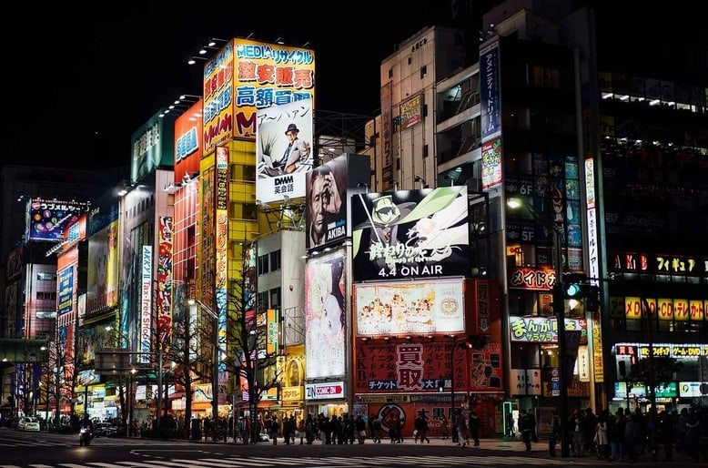

Akihabara (秋葉原) est l'un des quartiers de Tokyo les plus connu par les étrangers. L'essor et la popularité des manga et des jeux vidéo au niveau mondial ont pu grandement contribuer à sa renommée.
Bien des années avant sa popularité actuelle, le quartier était plutôt connu pour être le quartier du matériel informatique dernier cri. Elle le reste encore mais le gain de popularité de la culture manga à drastiquement changer le paysage du quartier.
On ne s'étonnera donc plus de voir de plus en plus d'étrangers visités ce quartier à la recherche de goodies de leur manga préféré. Des enseignes comme Animate, Cospa ou encore Kotobukiya feront le plus grand bonheur de ces afficionados.
Un quartier "animé"
Akihabara est donc devenu un endroit incontournable pour tous fans de manga mais aussi de jeux vidéo
Cependant, la vie du quartier de ne se résume pas qu'à cela.
Même si l'essentiel du quartier est tourné vers la culture manga, on peut trouver pas mal de restaurants et le fameux Yodobashi Camera qui est un équivalent des enseignes FNAC en France mais plus diversifié.
Il existe aussi une grande zone à Akihabara appelé "Belle salle" qui permet à de nombreux évènements de s'y dérouler comme des ventes de vêtements à la mode ou des évènements culturels de divers pays.
 Le quartier d'Akihabara, la nuitLes visiteurs étrangers auront aussi la possibilité d'acheter des produits en duty-free. Des magasins dédiés et certaines enseignes comme le Yodobashi Camera cité précédemment le permettent également.
La nuit tombée, les activités ne manquent pas comme les spectacles d'idoles ou les game centers avec leur multitude de jeux de grue.